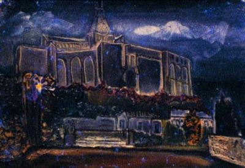

Sanki bütün aklım o dişte toplanmış gibi onu çektirince aklımı başımdan alan kanlı bir isyanla karşı karşıya kaldım. İkinci gidişimde dişçi: – Alalım bu dişi, dedi, zaten sallanıyor; iş açar başınıza sonra... Çoktan beri diş çektirmedim, aklıma kerpeten, daha da kötüsü o damağa batan iğne geldi, ağzımın en dibinde iki tane kronun yanında sessiz sedasız oturan, ara sıra “ben de varım” gibilerden hafifçe sızlayan bu dişin pek ziyanı da yoktu zaten; peki nasıl isterseniz dedim, fakat başka sefere olsa daha iyi olmaz mı? Üçüncü gidişimde dolguları yaptıktan sonra gene dokundu, alalım bu dişi, dedi; zaten sallanıyor. Rahatsız ediyor belli işini seven her iyi insan gibi bu diş de onu rahatsız ediyor:
– Hay hay dedim, nasıl isterseniz.
Hemen hazırlığa geçti. Kerpetene razıyım ama iğne canımı sıkıyor. İğne yapmasanız, dedim şart mı? Evet, dedi, şart; akıl dişidir (dent de sagesse), kalbiniz sağlam, diyabetiniz filan yok değil mi? Bilmem lâzım. Yok dedim, bildiğime göre yok, kalbim de sağlamdır... Biraz sonra iğnenin damağımda girdiği yerlerin acısıyla gözümün kenarından bir damla yaş aktı. Gördünüz mü, dedi; ne kolaymış. Biliyorum dedim, düşüncesi beni fena eden, kendisi değil... Güzel, biçimli kadın elinin ustalıkla sakladığı kerpeteni görmedim bile, dişin oldukça güçlü olduğunu kafamın sallanmasından anlıyorum, en ufak acı bile yok; biraz sonra: Oldu, dedi; muazzam bir dişmiş, saklamak ister misiniz? Bana bir kutu içinde bir ilaç, bir de reçete yazdı, kanama olabilir dedi, o zaman ilaçla ağzınızı yıkarsınız; hapları da dört gün arka arkaya alacaksınız, kanama fazla olursa oksijenli suyla pamuk tamponu yaparsınız, kuron işi daha iki üç seans sürecek, iyi bir şey olmasını istiyorum...

Rue de Seine’e uğrayıp Benezite’e bıraktığım üç tualle eczaneden hapları aldım kahveye gittim; ağzımda ne ağrı var ne kanama, kahvede gazeteleri okudum, yarımda odama çıktım, çalışırken aşağıdan çağırdılar, indim açtım; Tuğrul’la Güneri, Tuğrul Amerika’dan dönmüş ertesi gün Hollanda’ya gidiyor, oturduk konuştuk, sonra onlarla beraber çıktım köşedeki “Tabac”dan bir Gauloise alıp iki de bira içip tekrar odama döndüm. Gazetemi okurken kanama başladı, ilk önce hafiften, sonra ağzımın içini dolduran tuzlu bir tat; zaten söylemişti doktor, diye düşündüm, akıl dişidir, kanama yapabilir, demişti... Gazeteyi okurken beş on kere musluğa gidip tükürdüm. Yattım, ama ağzım doldukça kalkıp tükürüyorum, kanama gittikçe şiddetini arttırıyor, nihayet yatağımın yanına leğeni koymaya mecbur oldum, sabaha kadar uyuyamadım, gündüz de öyle devam etti; iki yumurta pişirip yemeye çalıştım, yiyemedim; öğleden sonra kahveye gittim, fakat rahatsızım; ağzımın her doluşunda yutamadığım kanı aşağıya lavaboya inip tükürüyorum... Baktım olmayacak odaya döndüm, zaten yakıncacık; biraz uyumuşum galiba; kapı çalındı, açtım Avni; biraz konuştuk, bir şeyler söylüyor ama pek dinliyemiyorum, saadet içinde yüzüyorum, ne akıntıda olduğumu bilemezsin filan gibi bir takım laflar, halinden şikâyet ediyor; biraz sonra kalkıp gitti... Geceyi nasıl geçiririm diye düşünüyorum kendi kendime; uyuyabilsem bari biraz, kanama çok arttı, her halde farkında olmadan diyabete yakalanmış olacağım. Dişçiye telefon mu etsem acaba; saat altıya kadar oradadır, ama normal bir şeyse, rahatsız etmiş olursam, zaten kadın para da almadan bu işi en iyi şekilde yapıyor, bu geceyi de geçireyim de dedim; bakalım yarın ne olur?
Odada canım sıkıldı kahveye indim, Detais’ye[57] ; galeri sahibine telefon ettim, Londra’daki galerinin sahibi gelirse atelyeye getirsin diye, belki bana orda sergi filan açar dedim; yok diyor, niyeti yok, gazeteler bizim karma sergi için iyi yazmışlar Londra’da, akroşajda tuallerimiz beğenilmiş, fakat özel sergi açmak istemiyor; gelirse gelirim tabii... Arkasından yarışmaya telefon ettim, Lucie Valore’un açtığı Utrillo yarışmasına, konu sokak; bir resim hazırlamıştım bu iş için, sorayım dedim en son teslim günü hangi gün, çerçeve meselesi falan filan... Kabinden çıkıp tekrar lavaboya gidip ağzımı boşalttım, kan artık pıhtı halinde geliyor, ağzımın içinde midemi bulandıran bir tad. Midemden de bir kan kokusu geliyor burnuma... Bir bira söyledim mösyö Josephe’e[58], pek severim M. Josephe’i; 45 yıldır aynı kahvede Boule d’Or da garsonmuş, ayağında ülseri var, biraz sürüyerek dolaşıyor, karşı kahvelerin garsonları gibi lanet, terbiyesiz değildir, hal hatır sorar, bayramlarını, yılbaşlarını tebrik ederim; mösyö Albert’i de severim; yalnız Leon’u sevmezdim, “külli kasir’ül fitne” gibi bir hali vardır, galiba aracılığı filan da var, kahveye gelen bir alay kız kadınla pek senli benlidir. M. Josephe’e bir Pelfort daha söyledim; merdiven inip çıkarken dizlerim kesiliyor adeta; lavaboya bile inemiyorum, çok kan kaybettim anlaşılan, neden kesilmiyor acaba, diyabet filan mı? Doktora telefon edeyim dedim, sonra vazgeçtim, ikinci Pelfort’u içerken bir rahatlık; uyku geldi üzerime; çocukken rüyalarında uçarken duyduğum hafiflikle peykeye doğru hafifçe kaydığımı, bir rüyalar âlemine girdiğimi hissettim. Kendime geldiğim zaman M. Josephe başımdaydı: – Fenalık hissettiniz galiba mösyö, dedi; kendinizi iyi hissetmiyorsunuz. Evet dedim, biraz kendimden geçmişim, çok mu kaldım o durumda? Bilmem dedi, ben terastaydım; bir kadın haber verdi. Biraz ilerdeki masada bir çift şaşkın gözlerle bana bakıyorlar. Rahatlık duymaya başlarken bir yudum bira aldım, midem bulandı, birden simsiyah bir kay çıkardım, gerisini elimle ağzıma bastırarak koşa koşa lavaboya inip boşalttım, bereket lavabo boş, kimseler yok. Yüzümü yıkadım, merdiveni adeta sürünerek çıktım, hesabı ödeyip eve gideceğim; ev iki adımlık yerde, fakat bana irişilemiyecek kadar uzak geliyor, bir yerde yığılıp kalmasam bari diye düşünüyorum. Açım da yirmi dört saattir; ağzıma bir şey koymadım, onun da etkisi var belki de. Merdivenleri adeta emekleyerek çıktığımı hatırlıyorum, ancak soyunabildim; kendimi çaprazlama yatağın üstüne bırakmışım.
Ne kadar uyuyabildim bilmiyorum; ağzımın içi dolmuş etraf kan olmuştu hep. Ölüyorum diye düşündüm; muhakkak ölüyorum; hayat ağzımın sol üst damağında küçücük bir delikten şırıltıyla akıyor, aynayı tutup ağzımın içine bakıyorum, ne oksijenli pamuk tamponu ne hiçbir şey fayda etmiyor, kan durmadan ığıl ığıl boşanıyor. Tıpkı yaptığım büyük resimdeki tavuk mezbahası gibi; bacaklarından asılı tavuklar bitmez tükenmez bir sıra halinde ellerinde makasları olan mavi gömlekli genç kızların bulunduğu bölüme doğru itiliyorlar, orada lastik eldivenli iki güzel el tavuğun gagasını açıp içinde iki damarı kesiveriyor, o kadarcık işte; ondan ötesi artık ölüm, tavuk anlıyamadığı bir değişmenin şaşkınlığı içinde çırpınarak sıcak su makinelerine doğru ilerliyor, tüyleri çabuk yolunsun diye. Başımı kaldırıp tekrar aynayı ağzıma tutup bakıyorum, oksijenli su gargarasını yapıp ağzımın içini temizlemeden biraz sonra kanama tekrar başlıyor, devamlı, ağır, hiçbir şeyin önüne geçemediği kanama. Kalkabilsem, ıslanan kirlenen havluları yatak çarşaflarını değiştirebilsem. Hiç olmazsa ölümün karşısına temiz pak çıkabilsem!
Yıkıla yıkıla kalkıp bavuldan temiz çarşaf çıkardım; çamaşır yok, bitmiş; sırtımda bir atlet fanilesi var boya içinde; donumu da kirletmişim uyurken, farkına varınca tüylerim ürperdi; hayatımda ilk defa başıma geliyor bu! Simsiyah katran rengi biraz bulaşma; kalkıp temizleniyorum elimden geldiği kadar sabunlu suyla... Yorulunca kendimi yatağa atıp dinleniyorum... Oda darma dağınık tavan arası gibi; giyecek bir kat temiz çamaşırım olsa bari; hepsi torbada; çamaşır ve ütüye gitmek için derlenmiş, götüremedim işte kaç gündür, ihmal ettim, son kalanları kullanıyorum...
Hava da soğuk aksi gibi, soba geçmeye başlamış... Ölüm; diyorum, bu ölüm bu; hesaplıyorum; bir gün iki gecedir belki de iki litre kan kaybettim; daha ne kadar dayanabilirim? Resmi de götürüp veremem; yazık, halbuki bu iş için yapmıştım... Çocuklardan birisi de uğramadı aksi gibi! Sefa yahut Oktay filan uğrasalar resmi veririm onlara götürürler yerine, altmış frank vermek lazım; var yanımda! Gelirken söylerim bir takım da atlet fanilesiyle don alırlar, ölürsem de hiç olmazsa daha başka türlü olur... Kimse gelmezse ne yaparım? Acaba Mr. Detais’ye telefon etsem desem ki: – Mr. Detais; resim var yarışma için, hastayım halim yok; bir ara uğrayıp alıp götürürseniz iyi olur! Yahut Abidin’e haber göndersem, Güzin’in arabası var. Ama olmaz ki, münasebet almaz... Sabaha kadar dayanabilsem! Kalkıp bir limonata yapayım dedim, hem de leğeni boşaltırım! Limonu yarısına kadar sıkabildim, başım döndü tekrar kusma geldi, kaybettim, yatağa attım kendimi...
Uyuyabilsem; beş dakikaya bile razıyım, fakat nerde! Ağzım doluveriyor hemen... Biraz dinlendikten sonra kalkıp limonatayı yaptım, tekrar yatağa attım kendimi; içmeye dermanım yok. Hastahaneye kaldırıverseler beni... Ev sahipleri duyarlarsa deli olurlar, evlerinde ölürüm de başlarına kalırım diye ödleri kopar, uzun boyu ifadesiz yüzüyle Gaston geliyor gözümün önüne, bizim yüz elli kiloluk Madamın sıska kocası Gaston; ölüm bile onun gözünde saygı uyandırıcı olamaz: – Alın bunu kaldırın götürün der, bas bas bağırır; tüketim toplumunun yarattığı bir canavardır o, evimde intihar etti, namusum beş paralık oldu diye ölüme tekme atar bu herif diye düşünüyorum.. Sonra ne de olsa insan diyorum, onun da bir kalbi var, bu kadar kötü huylu oluşu belki de çok çalışmasından... O sıra aklıma bir gün evvel bisikletinden düşen adamın hikâyesi geldi, adamın düşünce bacağı çizilmiş biraz, ilk önce aldırmamış tabii fakat sonra çorabının ıslandığını hissedince bakmış damla damla kan akıyor, biraz sonra kan fışkırmaya başlamış, adam gecenin ortasında elinde bisikleti bir kapıyı çalıyor kapı yüzüne kapanıyor, ıssız da bir yermiş, tek tük evlerden hangisine baş vurduysa kapıyı suratına kapamışlar, nihayet yoldan geçen bir Amerikan askeri arabasını durduruyor, fakat lisan bilmeyen Amerikalıya derdini anlatıncaya, bir hastahaneye kapağı atıncaya kadar ruhu bacağındaki kuş gözü kadar delikten göğe ulaşmış...
Ben de mi acaba öyle olacağım, başımı kaldırıp duvardaki tavuk mezbahası tualine baktım, güldüm kendi kendime hatta; resmini yaptığım şu bacağından asılı tavuktan ne farkım var benim! Düşünüyorum bütün tarih boyunca binlerce insan bacağından, kolundan, boynundan asılmadı mı, öldürülmedi mi? Yalnız o zaman mezbahalar bu günkü kadar gelişmemişti, şimdi her şey otomatik.. Yine dalmışım biraz, ağız dolusu bulantıyla uyandım: “ölüm” diye düşünüyorum, o kadar da korkulacak bir şey değil, yavaş yavaş geliyor işte, hiçbir acım da yok üstelik, halsizim işte; o kadar! Sabaha kadar dayanabilsem hastahaneye giderim, ne de olsa gündüz; ama gecenin ortasında bu işe atılamam, düdükler çalarak gelen cankurtaran arabasını düşünüyorum, zaten haber versem bile nasıl haber verebilirim, değer mi acaba, diş çektirmekten ölen duyulmuş mudur hiç!
Kapı çalınıp şu anda biri gelse belki de durur diyorum bu kan, bu kan belki de yalnızlığın akan kanı, yalnızlığım yalnızlığıma kan ağlıyor işte adeta...
Ölsem resmi makamlara da külfet olur diye de düşünüyorum, nezaketen ölümün yüzüne karşı bir şey söylemezler ama, “Nerden geldi bu herif buraya, ölecek başka yer bulamadı mı” diye de düşünürler doğrusu... Arkadaşlar, yakınlarım üzülür telaş ederler, sonra her şey yerli yerine oturur, leşime konmak için kanat çırpan akbabalar hemen havalanır göğsüme konar, tırnaklarını soğumuş bedenime saplarlar... Camların yüzü ağırmaya başlayınca ümitle doldu içim, Sainte-Chapelle’in kulesini adamakıllı seçebiliyorum artık; utandım kendi kendimden adeta; ne dedim bu telaş, ne olmuş yani, harplerde, kazalarda yaralananların canı yok mu? Sabah da oldu, diyorum işte, ölmedin; artık ölmezsin; ölsen ne olacak sanki; kıyamet mi kopacak! Hayat da güzel şey amma velakin, St-Michel’de kahvelerde bacak bacak üstüne atmış güneşlenen kızları görüyorum, yanlarına gidip konuşmaya cesaret edemem ama görüyorum ya o da bir şey ölürsem halbuki sevdiklerimi göremem, kardeşlerimi göremem, ne kadar üzülürler. Gelseydi de hiç olmazsa burada ölseydi, diye ağlarlar; kederlerine bir de gurbette ölmenin acısı biner.. Duruyor gibi galiba, yoksa bana mı öyle geldi, aynayı alıp bakıyorum, önüne geçilmez akış devam ediyor, yalnız bir şeye dikkat ettim; lavaboya gidip başım dönüp de kendimi yatağa atınca biraz eksiliyor, bütün halsizliğime karşı kalkıp yüzümü yıkadım, soğuk su biraz iyi geldi, yerin ayaklarımın altından çekildiğini hissetmiye başlayınca koşup kendimi yatağa attım... Şimdi biri gelir belki diye ümitlendim; Yvonne daha gelmemiştir; bir kâğıda arkadaşlardan birinin telefon numarasını yazıp kapı komşum matmazel Torosyan’ın kapısının altından atsam o hemen gider telefon ediverir, o da geçen sene az hastalanmadı zavallı... Kapıyı açıp dışarı çıkacak takatim var mı acaba, bir deniyorum yok; olacak gibi değil; tuttuğum her kolu bükecek kadar kuvvetim nereye gitti benim, kadınlar hep şikâyet etmezler miydi benim kuvvetimden; severken ezer gibi sevdiğimi söylerlerdi, ne oldu bana; bayram yerlerinde çocukların ellerinden kurtulup havada boşalan balonlar gibi ayağa kalktıkça duvardan duvara yalpalıyorum... Birden saat çaldı, Quai de I’Horloge’dan her geçişimde önünde durup baktığım o saat çaldı; çok çaldı, hem on bir on ikiyi vurdu; on iki olmuş saat demek? Tası dökmek için kalktım, pencereden rıhtımdaki saati görmiye çalışıyorum, onunla anlarım vaktimi hep, cam puslu göremedim, ayaklarım kaymıya başladı yine altından, kendimi yatağa attım... Ölmem, diyorum artık, herhalde ölmem, ölseydim her halde ölürdüm şimdiye kadar! Bir uyuyabilsem, beş dakikasına bile razıyım, ah bir uyuyabilsem! Resmin teslim günü de yarın, nasıl olsa kazanamam ama hiç olmazsa yerine verebilseydim, o iş için yaptım onu; Utrillo için yaptım... Biliyorum anlamıyacaklar, jüri anlamıyacak, ama Utrillo olsa anlardı diye düşünüyorum, benim de sokakları sevdiğimi anlardı! Biri gelse, biri çıkagelse; ama bu işi becerebilecek biri... Yves yapabilir bu işi; Yvonne’un oğlu Yves; tosun gibidir o, belki durumu anlatacak kuvveti bulurum kendimde. Biraz uyumuşum galiba; rüya da gördüm... Çok sevildiğim bir memleketin bir bakanlığına çalışırken artık bana lüzum kalmamış, dövüyorlar beni; öldüresiye dövüyorlar; A. Kocaaslan eline bir demir almış kıyasıya vuruyor, ilerde Mesut Bey’le Zahit var arkaları dönük bana, Mesut Gün, Zahit’in omuzuna kulunç girmiş, onu ovmakla meşgul; “Mesut Ağabey; yardım etsene bana diye sesleniyorum; yapılır mı bu iş bana, ben en mühiminiz değil miyim –niye en mühimleriymişim onu da anlıyamadım ya, rüya bu işte– değil miydim bütün bu işleri başarmadım mı? ..” A. Kocaaslan olanca hıncıyla vuruyor: – Biliyorum, canım kardeşim diyor Mesut Gün, biliyorum, ama idareten işte, ne yapacaksın! Zahit’e fazla aldırma gibi bir işaret yapıyor... Sonra kendimi ağaçlar altında bir yerde buluyorum, düğün elbiselerimi giymiye gidiyormuşum, evleniyormuşum... İhsane almış düğün elbiselerimi yapmayı üzerine; nefret ederim İhsane’den... Yan yana yürüyoruz, kendi kendimi görüyorum, kafatasım mosmor ortasından yarılmış, yüzüm mosmor çürük içinde.. İhsane söylenmiye başladı: – Sen, dedi; tam on saat bana sataştın, senin ne olduğunu bilirim ben... Hayatımda aklımdan İhsane’ye sataşmak geçmedi benim halbuki! Çirkindi, üstelik de huysuzdu: – Deli gibi âşıktım, sana diyorum, âşıktım da ondan, yoksa sana karşı kötü niyetim yoktu! İhsane yine kin dolu sessizliğine gömüldü... O sıra yağmur başladı, elbiselerim ıslanacak diye aptalca bir telaşa kapılıp karşı tarafa ağaçların altına doğru koştum, Selçuk gözüme ilişti, o da yağmurdan bodur bir çamın altına gizlenmiş, beni görmesini hiç istemiyorum nedense, İhsane’ye[59] parmağımı dudaklarıma götürüp yalvaran bakışlarla bakarak susmasını işaret ediyorum!
Uyandım, yine ağzımdan akan kan havluda göl olmuş, leğene kustum, kan kokusu fena ediyor beni; havluyu katlayıp başımın altına koydum, yeni havlu çıkarmıya takatim yok çünkü... Güçlükle, bin türlü güçlükle oksijenli suyla çalkalıyabildim ağzımı, başım yastığa düştü... Sigara içeyim dedim, bir sigara içeyim! Bir sigara yaktım; hiçbir lezzeti kokusu yok; attım sigarayı sonra birden aklıma geldi, tütün, dedim kanı durdurur derler, öyle işittim. Evliya Çelebide mi bir yerde okudum hatırlıyorum, tütün koysam acaba mikrop kapar mı yara, ama dezenfekte ederim, oksijenli suyla... Bir Gauloise’ın kâğıdını çıkarıp tuttum yaranın üstüne bastırdım, dursun diyorum, bakalım ne olacak... Biraz sonra ağzımın içini tütünün zehir gibi acı lezzeti doldurdu, kanın tuzlu tadını duyamıyorum, yoksa durdu mu? Aynayı alıp baktım, ıslanmış tütünden de kan damlamaya başlamıştı bile.. Ne olursa olsun, dedim; tutacağım bu tütünü ağzımda, hiç olmazsa kanın o iğrenç kokusunu alıyor.. Tekrar biraz uyudum galiba; bir saat kadar olmuştu yaraya tütün koyalı ağzım zehir gibi oldu; tütün çiğneyenler nasıl çiğnerler bilmem ki! Çıkardım tütünü, ağzımı oksijenli suyla çalkalayıp aynaya baktım, biraz sonra yara tekrar kanamıya başladı; başım yastığa düştü ümitsizlikle...
Ağzımı temizleyip oksijenli suya bastırılmış pamuk tamponu tekrar yaraya bastım. Yastığı biraz kaldırıp başımı dik tutacak şekilde ayarladım, inanılacak gibi değil, o tuzlu lezzet yayılmadı, nedense yayılmadı; her halde tütünün acısı uyuşturdu dilimi diyorum; ama belki de sakın dinmiş olmasın... Korka korka aynayı alıp baktım, pamuk beyazlığı var... Fra Anjelike göklerdeki cennetinden inip ağzımdaki o küçük yaraya sihirli fırçasıyla dokundu sanki; ağzımın içine bir cennet rahatlığı sindi... Başımı bile oynatmıya cesaret edemiyorum artık, tekrar yeniden başlıyabilir diye, ayna elimde ağzımın içini bir cennet bahçesi seyreder gibi seyrediyorum... Yavaş yavaş başımı yastığa dayadım, gözlerimi kapadım, saat altıyı vurdu, demek saat altı olmuş, salı günü akşam beşte çektirdim bu dişi, kaç gün sürdü bu kâbus diye hesaplıyorum; acaba yeniden başlar mı, bu sefer cankurtarandan başka çare yok; kimse de gelmedi daha... Ağzımı açıp aynaya baktım, pamuk bembeyaz, tertemiz; dişimi çeken eller gibi beyaz ve temiz; öpeceğim geldi içimden o eli, olsa da öpsem diye düşündüm; atlattım bu işi, atladı; bir komplikasyon olsaydı onun da başı belaya girerdi diye düşünüyorum, ben söylemezdim ama sorarlardı bu işin sorumlusunu öğrenirlerdi..
Yatakta hiç kıpırdamadan geceyi bekledim; büyük bir bardak dolusu çok şekerli limonata yapıp içtim.
Uyku uyuyamıyorum ama, rahatım... Ağzımın içinde o iğrenç tuzlu lezzet yok artık, bir saatte belki yirmi defa aynaya baktım.. Yok geçmiş; geçmiş artık.. Ertesi gün öğleye kadar uyumuşum... Kalkıp resmin çıtalarını çaktım, fenalık geldi tekrar uzandım.. Bir iki sigara içip düşündüm kendi kendime; saat yediye kadar resmi götürebilirim, vaktim var daha; yattım, bir iki saat daha uzandım, sonra yavaş yavaş yüz yaşında ihtiyarlar gibi caddeye inip yeniden Dünya’ya gelmiş çocuğun sevinciyle bir taksiye attım kendimi; resmi en son götürüp teslim eden de ben oldum galiba...
4 Nisan 1964 / Paris